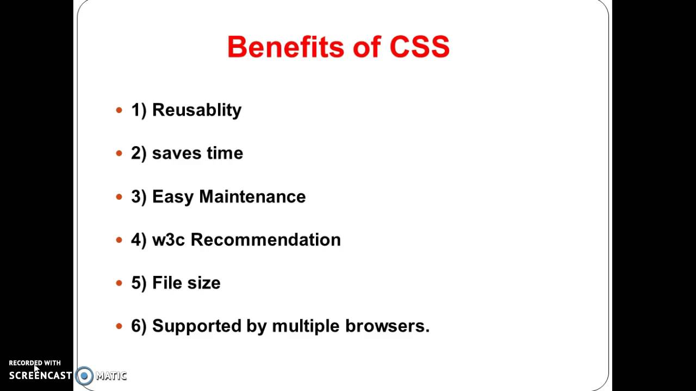
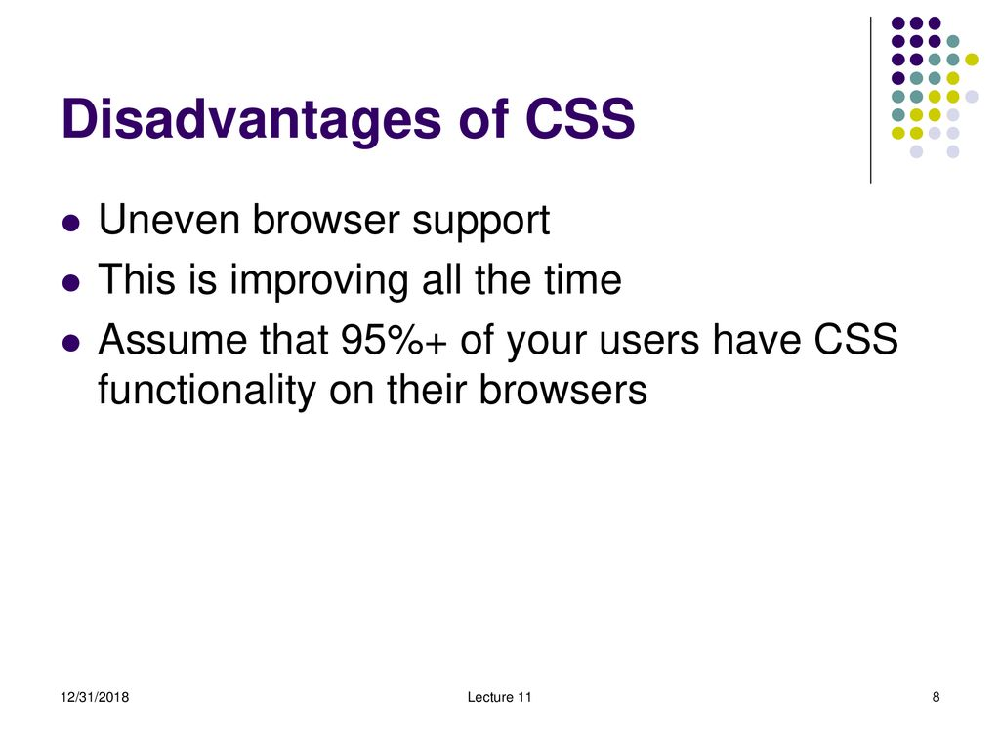
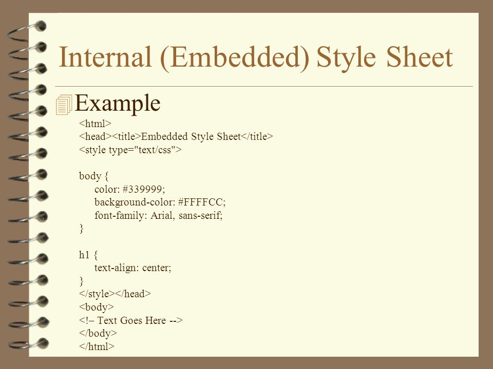

-
Q.1 What are the benefits of using CSS?
 -
Q.2 What are the disadvantages of CSS?
 -
Q.3 What is the difference between CSS2 and CSS3?
Unlike CSS2, which was comprised of a single document, CSS3 has its specifications divided into many individual modules, which makes CSS3 a whole lot easier to handle. With CSS3, the designers can now use special fonts, like those available in Google Fonts and Typecast.
-
Q.4 Name a few CSS style components
Properties: These are human-readable identifiers that indicate which stylistic features you want to modify. For example, font-size , width , background-color .
Values: Each property is assigned a value. This value indicates how to style the property. -
Q.5 What do you understand by CSS opacity?
The CSS opacity property is used to specify the transparency of an element. In simple word, you can say that it specifies the clarity of the image. In technical terms, Opacity is defined as degree in which light is allowed to travel through an object.
-
Q.6 How can the background color of an element be changed?
To add background color in HTML, use the CSS background-color property. Set it to the color name or code you want and place it inside a style attribute. Then add this style attribute to an HTML element, like a table, heading, div, or span tag.
-
Q.7 Which property controls the image scroll in the background?
The background-attachment property sets whether a background image scrolls with the rest of the page, or is fixed.
-
Q.8 How to center block elements using CSS1?
To centrally align the block elements, we can simply make use of the center tag. All the elements within the center tag will be centrally aligned.
-
Q.9 How to maintain the CSS specifications?
The Specification defines how CSS properties should be implemented by browser vendors along with detailed algorithms, code samples and tabular information. The Specification also include: The syntax and data types of the language. Detailed explanation on CSS Selectors.
-
Q.10 What is embedded style sheets?
An embedded style sheet is declared within the head element of an XHTML document. It applies to the whole document, rather than just one element. Each style declaration (or CSS rule) gets applied to everything in the document that matches that rule.
 -
Q.11 What are the advantages and disadvantages of using external style sheets?
The main difference between inline CSS and external CSS is that inline CSS is processed faster as it only requires the browser to download 1 file while using external CSS will require downloading HTML and CSS files separately.
-
Q.12 What are the media types allowed by CSS?
The @media CSS at-rule can be used to apply part of a style sheet based on the result of one or more media queries. With it, you specify a media query and a block of CSS to apply to the document if and only if the media query matches the device on which the content is being used.
-
Q.13 What is the rule set?
A CSS rule set contains one or more selectors and one or more declarations. The selector(s), which in this example is h1 , points to an HTML element. The declaration(s), which in this example are color: blue and text-align: center style the element with a property and value.
-
Q.14 What is the meaning of the CSS selector?
CSS selectors are used to "find" (or select) the HTML elements you want to style. We can divide CSS selectors into five categories: Simple selectors (select elements based on name, id, class) Combinator selectors (select elements based on a specific relationship between them)